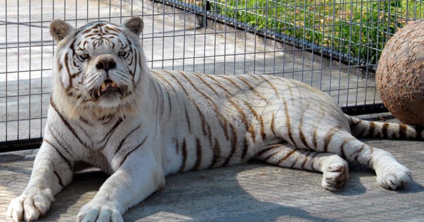

(The picture above is not me, it is a tiger named Kenny)This is my website! I am a student at the University of Maine. As of right now, my major is business undeclared but I plan on changing it to finance. I am from Kennebunk, Maine which is only 2 1/2 hours south of Umaine. I come from a family of accountants and business people so business was something I grew up with. After putting a lot of thought into what I wanted to focus on, I kept coming back to finance. I plan on pursuing a masters and with that degree I would like to do something with investing.